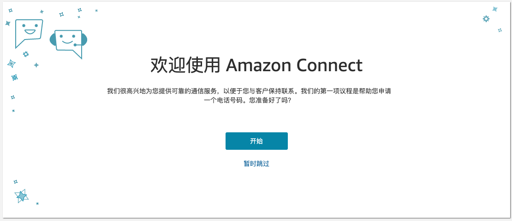
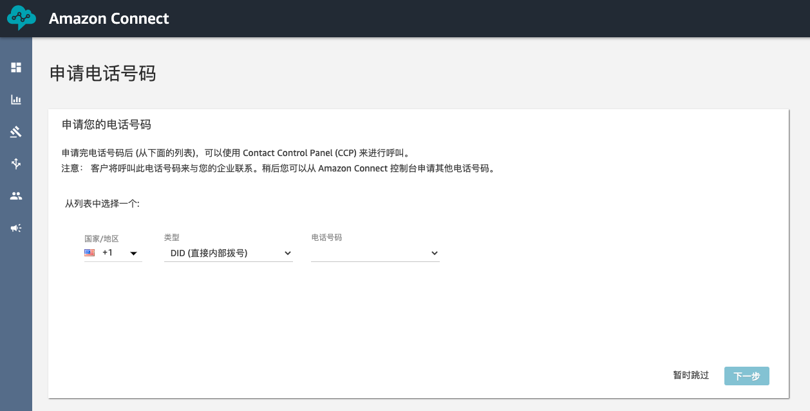
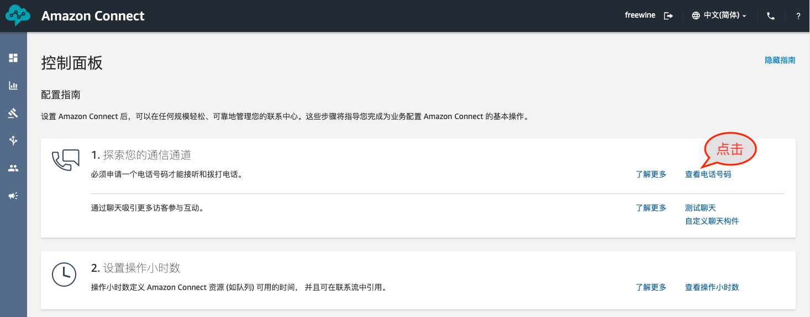
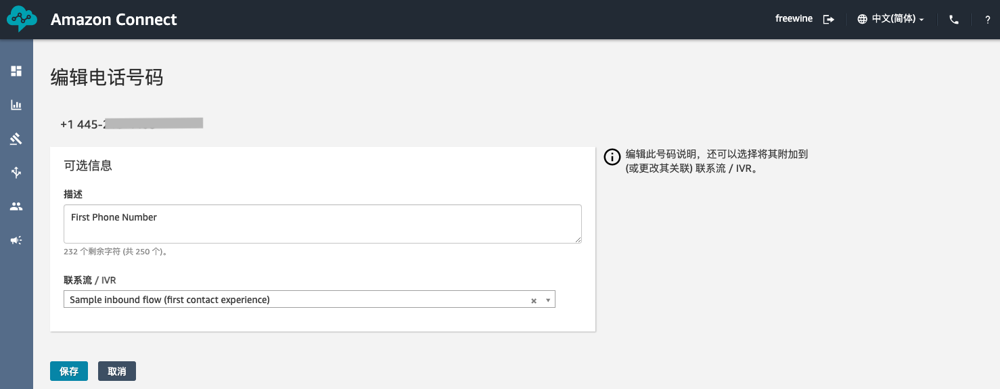
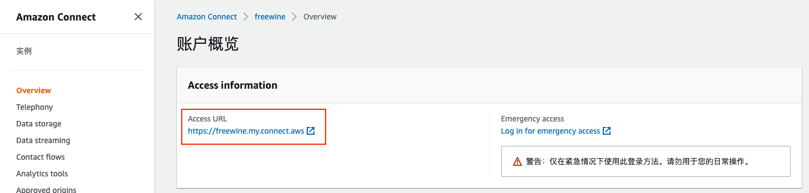
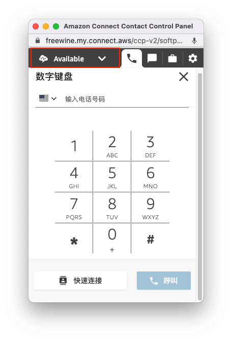
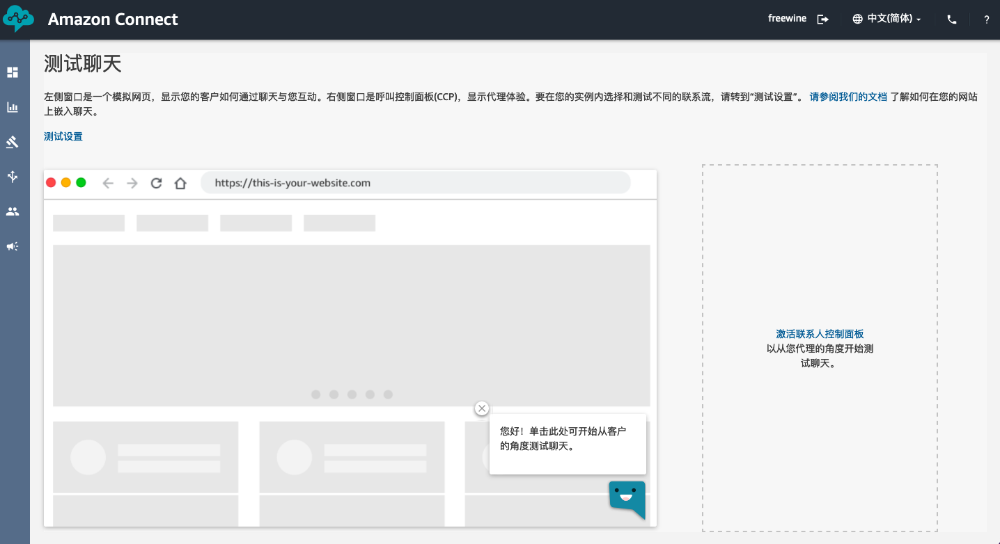
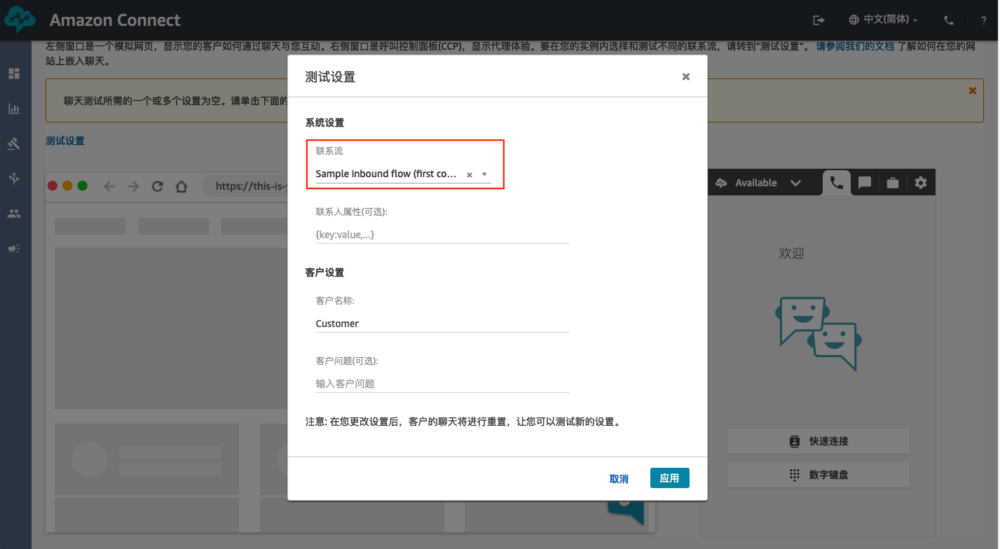

1.2 申请电话号码并进行验证
一、申请电话号码
- （接上一部分）点击“开始使用”进入到Amazon Connect的管理界面。
- 在欢迎使用 Amazon Connect页面，点击“开始”。(如果浏览器弹出申请麦克风权限的提示，选择“允许”。)

- 在申请电话号码页面，进行如下操作：
- 在“国家/地区”列表中选择对应的国家
- 在类型列表中选择“DID（直接内部拨号）”
- 在电话号码列表中选择您想要的电话号码。
- 点击下一步。
- 在“申请电话号码”页面，点击“Continue”。

- 申请电话号码成功后，会进入控制面板页面，点击“查看电话号码”，即可看到申请的电话号码。

- 点击新创建的电话号码，即可进入到“编辑电话号码页面”。可以看到，电话号码会自动跟Sample inbound flow (first contact experience)进行关联，然后就可以拨打这个电话进行测试。具体联系流的作用，后边的试验再进行介绍。

以上步骤均使用应急账号进行Connect的配置。在正常情况下，应该使用“账户概览”页面的Access URL进行访问，并使用创建Amazon Connect实例时设置的管理员账号进行登录。

二、验证电话和Chat联络
通过前边的步骤，我们已经完成了Amazon Connect云联络中心的创建和配置。接下来就可以进行验证，验证分为两部分：电话验证和Chat验证。
1. 验证电话联络
- 点击Connect管理界面右上角的电话按钮， 弹出CCP面板(呼叫控制面板)，将状态设置为“Available”状态。

- 使用手机拨打新申请的DID号码（您也可以申请第二个DID号码并创建新的客服用户进行测试）。您会听到一段英语欢迎语，然后依次按照以下步骤操作（通话流程在Sample inbound flow中定义）：
- 按1进入客服队列。
- 按1移动到队列头部。
- 按1进入队列，等待客服进行接听。
- 在CCP面板会接收到来电时，点击接听。
- 进行通话测试，测试结束后挂断电话。
- 点击“结束联系人”重新进入到“Available”状态。
2. 验证Chat联络
-
在Amazon Connect后台“控制面板”， 点击“测试聊天”，进入“测试聊天”页。
-
点击“激活联系人控制面板”，点击

-
点击测试设置，将联系流设置为“Sample inbound flow (first contact experience)”。

-
点击左侧模拟网站上的聊天图标开始以客户身份发起聊天。稍等片刻就可以收到欢迎信息，然后等待客服进行接听.
-
在右侧的CCP面板上，客服点击“接受聊天”。
-
在客户侧和客服侧输入信息进行聊天.
-
结束聊天。
恭喜！
您已经申请了电话号码，并成功进行了电话和聊天测试。